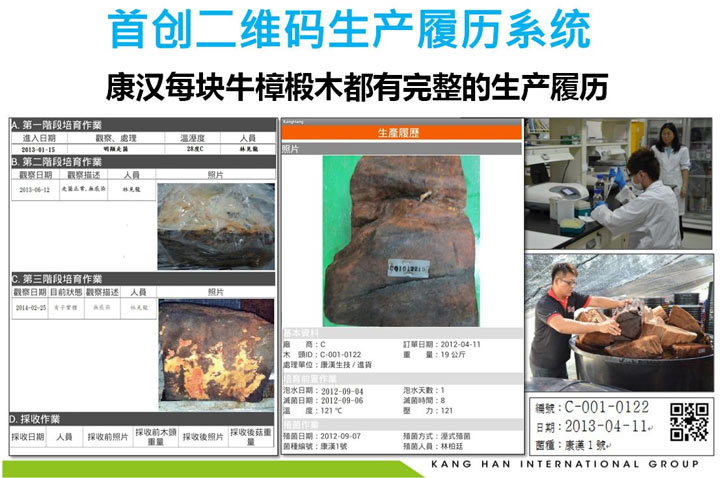
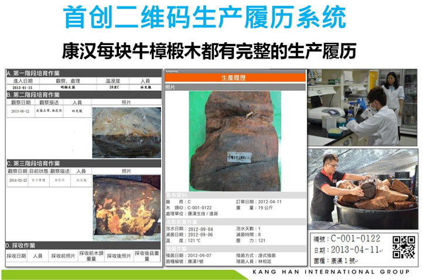
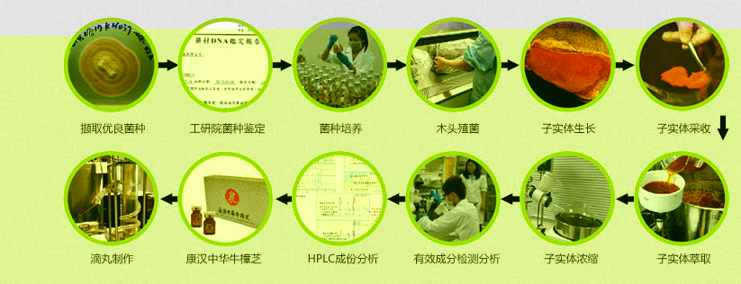
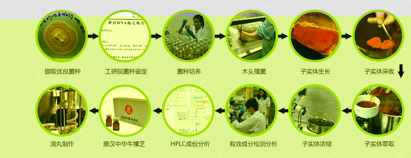
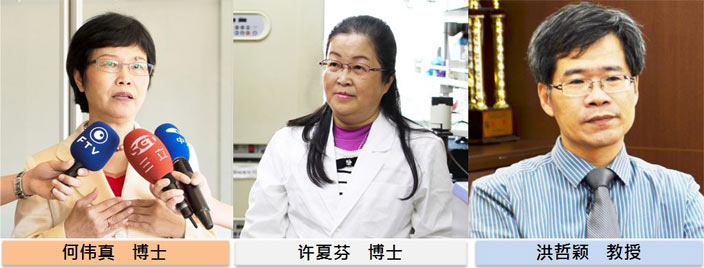

当前位置：网站主页 > 品牌介绍
康汉采用科技椴木裁培技术，并于台湾经济部资策会南区产业服务中心设立培育管理中心，紧邻台湾高雄亚洲新湾区，且率先通过国
际ISO22000和HACCP双认证，符合国际食品安全管理系统的标准化的作业流程及规范。以合法取得之牛樟椴木作为樟芝培养工具，藉由
导入食品安全管理系统，建置从牛樟椴木、牛樟芝菌种、殖菌技术、培育流程、产品检验分析等各项阶段之标准作业流程，经过2年以上
时间悉心照料，培育出与野生牛樟芝具备相同成份且无野生污染的牛樟芝子实
康汉中华牛樟子实体，为提供客户最纯正的牛樟芝原料及最安心的保证，从殖菌当日起，即制表建立数据库，纪录牛樟芝生长情况。除了
拥有标准化的作业流程之外，牛樟芝的生产履历，包含照片、日期、编号等都有详细的生产纪录。


符合国际认证标准的作业流程，保障最安全的牛樟芝原料！



何伟真 博士 / Dr. Jane Ho
康汉国际集团 研发长
美国佛罗里达大学 生物科技博士 / 大叶大学前校长 / 台湾林务局前局长 / 牛樟树无性繁殖技术与牛樟芝人工繁殖原创开发者 专长：研究牛樟芝超过 30 年,有『牛樟芝之母』之称。牛樟芝椴木及固态培养、保健产品开发。
何伟真 博士 / Dr. Jane Ho
康汉国际集团 研发长
美国佛罗里达大学 生物科技博士 / 大叶大学前校长 / 台湾林务局前局长 / 牛樟树无性繁殖技术与牛樟芝人工繁殖原创开发者 专长：研究牛樟芝超过 30 年,有『牛樟芝之母』之称。牛樟芝椴木及固态培养、保健产品开发。